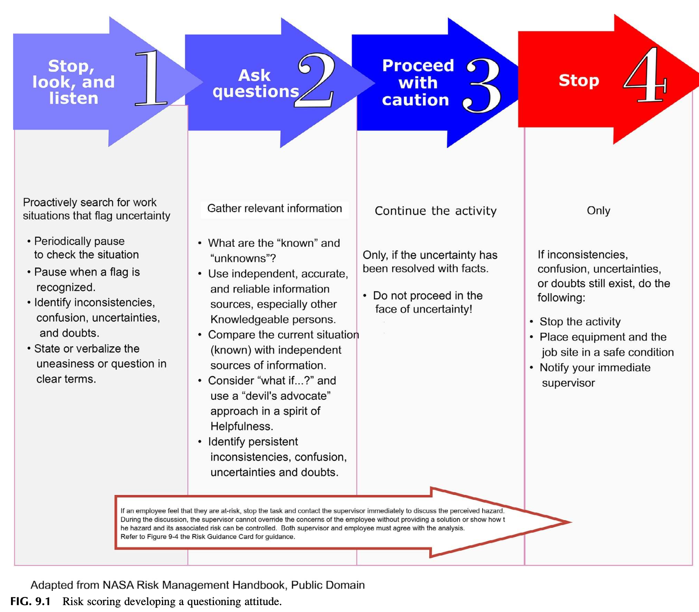
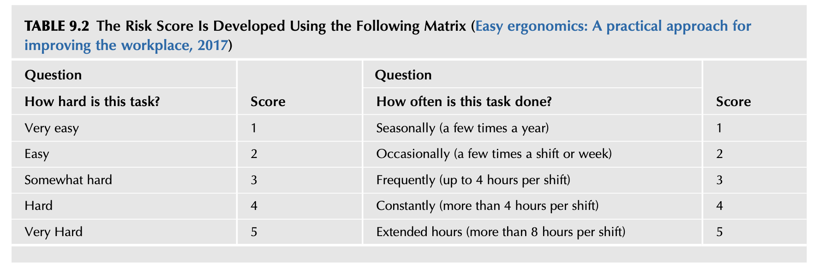
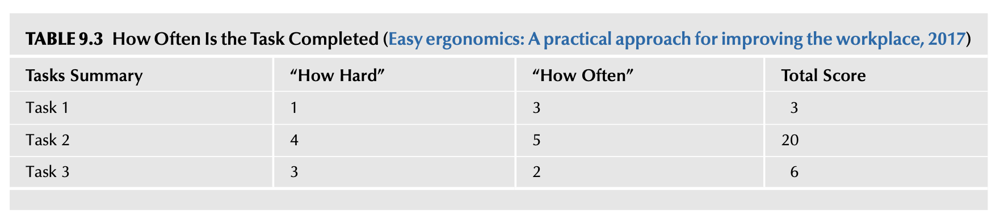
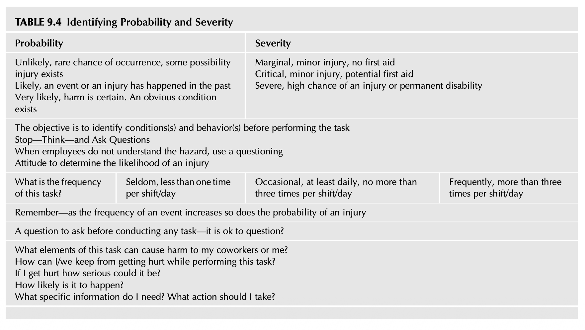
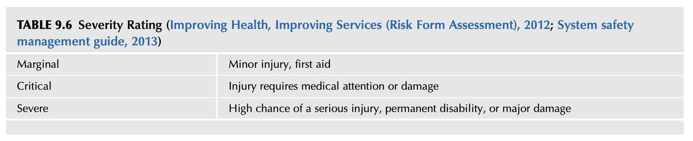
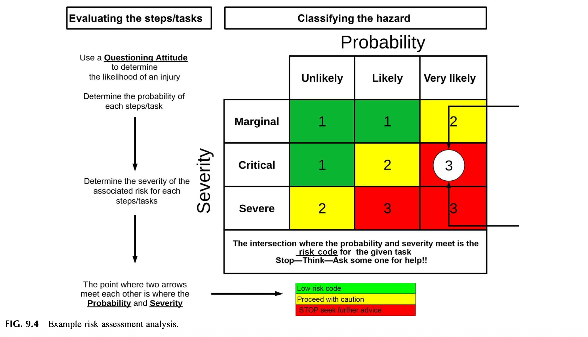

Chapter 9 Defining Risk Perception (위험 지각의 정의)
"주사위에는 기억력이 없다. 그것들은 언제나 매 순간 변화한다." (Dice have no memory; they change all of the time.) — CSI TV
"판단 또한 시간에 따라 변화한다. 어제 용인되었던 것이 오늘과 내일에는 용인되지 않을 수 있다." — 물라이 (Mullai, 2006)
1. INTRODUCTION (도입)
심층적이고 지속 가능한 안전문화(In-depth Safety Culture)를 구축·유지하기 위해서는 위험(Risk)과 그 통제(Control)에 대한 올바른 이해가 조직 전체에 깊이 스며들어야(Permeate) 합니다. 안전 전문가는 경영 리더십 팀에게 조직적 리스크(Organizational Risk)에 대한 완전한 평가와 깊이 있는 이해를 제공해야 할 책무가 있습니다.
1.1 전통적 점검·관찰 중심 SMS의 한계
- 잠재 리스크 연계 결여의 맹점: 안전경영시스템(SMS)이 단순한 현장 점검(Inspections)과 행동 관찰(Observations)에만 의존하여 유해위험요인(Hazards)을 식별하는 데 그친다면, 그 결과를 잠재적인 운영 리스크(Operational Risk) 및 위험 리스크(Hazard Risk)와 직접 연계하지 못해 부상과 물적 피해의 잠재력을 온전히 파악할 수 없습니다.
- 창발적 속성(Emergent Property)으로서의 안전: 안전은 조직의 모든 측면과 상호작용에서 비롯되는 '창발적 속성'입니다. 작업 환경의 미세한 변화에 대한 끊임없는 관심과 모니터링이 없다면, 손실 유발 사건(Loss-producing events)의 발생 확률은 점진적으로 증가하여 결국 통제 불능 상태로 치닫게 됩니다.
- 사후 약방문식 인식의 탈피: 유해위험요인과 관련 리스크의 진정한 규모와 심각성은 실제로 손실 사건이나 중대 사고가 터진 후에야 비로소 밝혀지는 경우가 너무나 흔합니다.
1.2 전 직원 리스크 교육을 통해 해결되는 2대 핵심 과제
- 위험 지각의 근본적 전환: "손실을 유발한 사건이 발생하지 않았다면 위험도 존재하지 않는다"는 그릇된 맹신을 타파하고, 잠재적 위험의 실재성을 직시하도록 지각을 바꿉니다.
- 노출 시점의 위험 소통 획기적 개선: 현장 통제 장치가 비효과적이거나 기능이 저하·열화(Degraded)되었을 때, 위험에 노출되는 바로 그 접점(Point of exposure)에서 상호 소통과 보고가 즉각적으로 이루어지도록 만듭니다.
1.3 제9장 8대 핵심 학습 목표
- 직원들이 불필요한 위험(Unnecessary risk)을 감수하는 근본 원인 설명.
- 사후 손실(Loss) 중심에서 선제적 위험(Risk) 중심으로 초점이 전환되어야 하는 당위성 설명.
- 부상률(Injury rates, TCIR)이 위험의 정확한 척도가 될 수 없는 이유 설명.
- 위험 안내 도구(Risk Guidance Tool)의 활용 원리 및 사용 개념 설명.
- '유해위험요인(Hazard)'과 '리스크(Risk)' 용어의 엄밀한 정의.
- 위험 안내 도구가 위험의 범위(Scope)와 심각도(Severity)를 소통하는 데 기여하는 방식 설명.
- 위험 수용도/내성(Risk Tolerance)의 개념과 그로 인한 잠재적 문제점 설명.
- 체계적인 위험성평가가 안전문화를 실질적으로 개선하는 메커니즘 이해.
2. RISK MANAGEMENT CONCEPTS (위험관리 개념)
위험관리(Risk Management) 개념은 고위험 산업(항공, 화학, 원자력, 해양 등)에서 수년 동안 옹호되고 활용되어 왔습니다.
- 기존 안전 프로그램의 후진성: 대다수 일반 기업의 안전 프로그램은 여전히 법적 규제 준수(Regulatory compliance)를 중심으로 설계되어 있으며, 초보적인 위험 원칙만을 제한적으로 적용한 채 철저히 '손실 발생 후 데이터(Post-loss data)'에 의존하고 있습니다.
- 위험관리의 정의: 조직 내에 잠재된 유해위험요인을 식별하기 위한 다양한 기법들의 체계적인 적용(Systematic application of an array of techniques)과, 그에 내재된 고유 위험(Inherent risk)에 대한 정밀 평가를 결합한 종합적 관리 체계입니다.
- 양방향 소통 채널의 필수성: 조직의 전반적인 위험 범위(Scope of risk)에 관한 정보를 효과적으로 공유하기 위해서는 상하좌우를 관통하는 열린 소통망(Open line of two-way communication)이 필수적입니다.
- 전사적 통합: 위험관리 요소가 조직의 모든 하위 구성 요소(Component)에 유기적으로 스며들어야만 잠재적 위험 수준을 온전히 통제할 수 있습니다.
3. RISK (리스크의 정의와 패러다임 전환)
"유해위험 사건 또는 노출(들)이 발생할 발생가능성(Likelihood)과, 그 사건 또는 노출에 의해 야기될 수 있는 부상이나 질병의 심각도(Severity)의 조합에 대한 추정치."
리스크 분석 개념은 수많은 작업장 위험 요소들 중에서 어떤 사건을 먼저 통제해야 하는지 객관적인 우선순위(Prioritizing)를 확립하는 표준화된 방법론을 제공합니다.
단순히 과거에 몇 명이 다쳤는지를 집계하는 사후 손실 정보(Loss information)에만 매달리는 좁은 시야에서 벗어나, 작업장에 상존하는 리스크 데이터(Risk data)를 적극적으로 포함하도록 안전에 대한 지각을 재지향해야 합니다.
4. WHY ARE UNNECESSARY RISK TAKEN? (왜 불필요한 위험을 감수하는가?)
4.1 위험의 무형성과 과거 경험 편향
위험은 무형적(Intangible)이며 작업 환경의 복잡한 구조와 일상적 맥락 속에 교묘하게 숨겨져(Hidden in the fabric of the work environment) 있습니다. 인간은 유해위험요인과 마주했을 때, 현재 눈앞의 물리적 잠재 위험을 객관적으로 분석하기보다는 "자신의 과거 경험이나 역사에 기반하여 현재 환경을 바라보는 타고난 성향(Built-in affinity)"을 보입니다.
4.2 위험의 일상화와 '일 끝내기 밈(Meme)'
많은 유해위험요인이 시간이 흐름에 따라 일상화(Routine)되고, 조직 문화는 위험을 무릅쓰는 행위를 '비즈니스를 수행하는 당연한 방식' 또는 '자신을 증명하는 수단'으로 칭송하기도 합니다. 또한 집단 동조 압력으로 인해 타인의 위험한 행동 방식을 그대로 모방합니다.
가동 중인 기계에 손을 넣어 이물질을 제거했으나 운 좋게 다치지 않았을 때, 작업자의 뇌에서는 "공정을 멈추지 않고 일을 빨리 끝내는 것(Getting the job done)"이라는 밈이 활성화되어 안전 절차를 압도하고 동료들에게 전염됩니다.
(기계 가동 중 손 투입)"] --> B{"즉각적 결과는?"} B -- "운 좋게 무사고" --> C["'일 끝내기' 밈 활성화
(Getting the job done)"] C --> D["위험 감수 행동 강화"] D --> E["주변 동료에게 전파/모방"] E --> F["💥 통제되지 않은 위험과 교차
➔ 대형 중대재해 발생!"]
5. 📌 LESSON LEARNED 1 (교훈 1: 인쇄기 롤러 청소와 위험 수용의 함정)
신문 인쇄 공장에서 한 작업자가 빠르게 회전하는 롤러에 걸레를 손에 감아 쥔 채 기계를 닦고 있었습니다. 관리자가 위험성을 지적하자 작업자는 이렇게 대답했습니다:
"내가 이 일을 수십 년 동안 해왔지만, 한 번도 걸린 적이 없어요!!" (I’ve done this for many years and never been caught!!)
그러나 그 말을 뱉은 지 얼마 지나지 않아, 작업자의 손은 회전하는 롤러 사이로 순식간에 말려 들어갔고 심각한 영구적 손 압착 골절 부상을 입었습니다.
저자 제임스(James)가 인쇄 산업에 처음 발을 들였을 때, 노련한 인쇄기 오퍼레이터들은 "진짜 훌륭한 인쇄공은 손가락 하나쯤은 없는 법이지(A good printer always has a missing finger)"라고 말하곤 했습니다. 위험을 수용하는 이 왜곡된 마인드셋은 수년간 전혀 변하지 않았습니다.
부정적 결과가 즉각 나타나지 않을 때 위험 행동은 지속적으로 강화됩니다. 운전 중 취식, 휴대폰 조작, 문자메시지 전송이 반복되는 이유도 "나에게는 나쁜 일이 일어나지 않는다"는 착각 때문입니다.
6. QUESTIONING ATTITUDE (질문하는 태도)
어떤 작업이 진정 안전한지 의심이 들거나 유해위험요인이 완전한 통제 하에 있지 않다고 느낄 때, 위험을 감지한 작업자가 작업을 즉시 멈추고 도움을 요청할 수 있도록 허용하는 조직적 밈인 "확신이 없을 때는 멈춰라(Stop when Unsure)"라는 행동 양식을 제도화해야 합니다 (Concepts and principles, 2009).

불확실성 포착(Stop, Look, and Listen) ➔ 질문 및 정보 수집(Ask questions) ➔ 불확실성이 사실로 규명되었을 때만 주의 진행(Proceed with caution) ➔ 의문 잔존 시 전면 중지(Stop when unsure)의 4단계 프로세스를 규정합니다.

하단 절대 원칙: 직원이 위험을 감지하여 작업을 중단했을 때, 감독자는 명확한 해결책을 제시하거나 위험이 통제될 수 있음을 객관적으로 입증하지 않고서는 직원의 우려를 일방적으로 묵살하거나 무효화(Override)할 수 없습니다.
"어째서 현장 직원들 대다수가 이미 뻔히 알고 있으면서도 전혀 고쳐지지 않던 위험천만한 환경을, 외부에서 방문한 제3자가 들어와서 지적해야만 비로소 개선되는 것인가?"
7. BUILDING THE FOUNDATION FOR RISK PERCEPTION (위험 지각의 기초 구축)
기존 산업계 위험평가 도구는 고위 경영진의 관리 도구로만 치부되어 현장 직원을 즉각 참여시키지 못했습니다. 현장 작업자가 즉각적인 조치를 결정할 수 있도록 최일선 현장(Grassroots level)에 직접 배치되는 풀뿌리 개인 위험성평가 도구(Personal Risk Assessment Tool)가 필요합니다.

'작업 난이도/강도(How hard: 1~5점)'와 '수행 빈도(How often: 1~5점)'의 2개 차원으로 구성됩니다.

Total Score = How Hard × How Often. Task 2의 경우 4점(Hard) × 5점(Extended hours) = 20점으로 최우선 개선 검토 대상이 됩니다.
⚠️ 한계점: 이 모델은 난이도와 빈도만 곱하므로, "해당 작업에 내재된 잠재적 부상 심각도(Potential injury severity)"를 전혀 고려하지 못한다는 결함이 있습니다.
8. HAZARD RECOGNITION TOOLS (유해위험요인 식별 도구)
JHA(작업위험성평가), SOP(표준작업절차서), Hazard Hunting, 과업 분석 등 다양한 도구들이 현장에서 사용되어 왔습니다. 그러나 이러한 도구들은 운영상의 유해위험요인은 찾아낼지언정, 그것이 내포한 '리스크(Risk)의 정밀 평가'에는 직접적으로 접근하지 못했습니다.
9. RISK ASSESSMENT TOOL DEFINED (위험성평가 도구의 정의와 특징)
본 장에서 제시하는 핵심 위험성평가 도구는 모든 직원이 주머니에 휴대할 수 있는 소형 카드 형태(Risk Guidance Card)로 설계된 현장 자가 평가(Self-assessment) 도구입니다.
- 도구의 3대 핵심 목적: (1) 작업 환경 고유 위험의 즉각 식별, (2) 잠재 리스크와 심각도 및 노출 분석, (3) 관리 리더십과 상호 합의된 통제 방안 도출.
- 이견(Disagreement)의 건강한 수용: "구성원들이 오직 좋은 소식만을 보고하거나 모두가 동의하는 척 침묵한다면, 지식 창출과 발견은 정체된다. 서로 다른 관점과 전문성을 지닌 인재들의 '도전 프로세스(Challenge process)'가 보장되어야 한다." (Charles Koch, 2007)
- 상위 에스컬레이션 메커니즘: 직원과 직속 관리자 간에 합의가 이루어지지 않을 경우, 논의는 지연이나 방해 없이 차상위 경영 리더십으로 즉각 격상되어야 합니다.
10. CHANGING PERCEPTIONS (인식의 전환: 손실에서 위험으로)
총기록재해율(TCIR) 등 사후 손실 지표는 과거의 이력일 뿐 조직의 실질적 안전 수준을 대변하지 못합니다. 제11장의 활동 기반 안전시스템(Activity-Based Safety System)과 결합되어야 합니다.
피트렐과 바트람(Fewtrell & Bartram, 2001)은 대중에게 수용 가능한 위험이 수용 가능한 위험이라고 정의했으나, 일반 사회 대중의 위험 수용 기준을 작업장에 그대로 적용할 수는 없습니다. 개인 시간에 스카이다이빙이나 무벨트 과속 운전을 즐기는 직원의 개인적 위험 수용 마인드셋이 현장으로 유입되지 않도록 원천 차단하는 객관적 표준 도구가 필수적입니다.
11. MEETING AND GETTING TO SUSTAINABILITY (지속가능성 확보를 위한 실행 전략)
개인마다 위험을 지각하는 수준이 천차만별이므로 주관적 '의견' 대신 객관적인 기준선(Baseline) 도구가 필요합니다.
- 리더십의 솔선 시연: 관리감독자가 실제 위험을 도구로 직접 평가하고 체험하여 도구의 가치를 확신함.
- 네트워크 다방향 확산: 리더십 팀이 가치를 강조할 때 조직 네트워크를 타고 상하좌우 모든 방향으로 전파됨.
- 소그룹 도입: 소규모 워크숍을 통해 초기 핵심 그룹의 자발적 공감대(Buy-in)를 확보하여 전사적으로 확산함.
12. IDENTIFYING RISK PERCEPTION (조직의 위험 지각 진단 16대 체크리스트)
| 번호 | 진단 영역 | 핵심 질문 내용 |
|---|---|---|
| 1 | 조직 가치 | 현재 사용 중인 안전 서식과 지침들을 이끄는 조직의 표방 가치(Espoused values)는 무엇인가? |
| 2 | 위험 허용도 | 우리 조직의 전반적인 위험 허용 수준(Risk tolerance)은 어느 정도인가? |
| 3 | 위험 인식 | 조직 내부 구성원들이 위험에 대해 현재 공유하고 있는 이해와 지각 수준은 어떠한가? |
| 4 | 외생 변수 | 일상적인 위험 감수 의사결정에 영향을 미치는 잠재적 조직 요인은 무엇인가? |
| 5 | 변화 피로도 | 지난 24개월 동안 추진된 프로젝트는 몇 개이며, 직원들은 이를 '이달의 유행(Flavors of the month)'으로 보지 않는가? |
| 6 | 저항 극복 | 이번 위험 도구가 '이달의 유행'으로 전락하는 것을 막고 저항을 극복할 구체적 전략은 무엇인가? |
| 7 | 도구 충돌 | 타 부서에서 발표된 다른 서식과 본 도구가 상충되거나 중복되지 않는가? |
| 8 | 수용 태도 | 과거 유사 제도들은 어떻게 수용되었는가? (열광, 체념적 인내, 소극적 무시, 적대감 등) |
| 9 | 도입 절차 | 신규 프로젝트는 전사 확대 전에 통상적으로 파일럿 테스트를 거치는가? |
| 10 | 과거의 오점 | 과거의 실패했던 기획이 이번 도구 도입에 부정적 편견(Taint)을 남기지 않았는가? |
| 11 | 네트워크 조력자 | 당신의 네트워크 중 도구 도입을 가장 강력하게 도와줄 핵심 조력자는 누구인가? |
| 12 | 교육 장애물 | 전 계층 대상 교육을 실행하는 데 있어 가장 큰 현실적 장애물은 무엇인가? |
| 13 | 소통 스타일 | 구성원들의 자발적 수용을 이끌어내기 위해 어떤 형태의 소통 스타일이 요구되는가? |
| 14 | 가치 전달 | 이 도구의 가치를 리더십과 현장 직원들에게 어떻게 가장 설득력 있게 전달할 것인가? |
| 15 | 강제성 여부 | 공식 정책을 통해 본 도구의 사용을 전사적으로 의무화(Mandate)해야 하는가? |
| 16 | SMS 호환성 | 본 도구의 사용이 현행 안전경영시스템의 핵심 요소들과 완벽히 조화되는가? |
13. 📌 OBSERVATION—CAUTIONARY NOTES (관찰—주의사항: 단어 프레이밍의 나비효과)
제임스가 컨설팅한 한 기업에서는 신규 프로젝트를 발표할 때 관행적으로 "롤아웃(Rollout, 전사 배포)"이라는 단어를 썼습니다. 현장 조사 결과, 직원들에게 '롤아웃'은 *"또 위에서 반짝하고 사라질 골치 아픈 프로그램(Flavor of the month)이 시작되었구나. 온갖 요란한 활동만 강요하다가 흐지부지 사라지겠지"*라는 냉소적 불신을 의미했습니다.
해당 기업에서는 '롤아웃'이라는 단어를 완전히 폐기하고, '도입/소개(Introduce)'라는 친숙한 단어로 대체했습니다. 이러한 작은 프레이밍(Framing)의 변화만으로도 직원들의 적대적 편견을 걷어내고 새로운 시도에 대한 건설적인 대화의 창구를 열 수 있었습니다.
14. IMPLEMENTING THE RISK ASSESSMENT TOOL (도구의 현장 실행 지침)
"아무리 일상적이고 반복적인 작업이라 할지라도, 모든 과업, 훈련, 미션, 운영, 그리고 개인 활동에는 언제나 위험(Risk)이 본질적으로 내재되어 있다."
- 업무 부담 가중 금지와 구식 서식 폐지: 위험 안내 도구가 행정적 부담을 주어서는 안 됩니다. 기존의 유명무실해진 낡은 안전 서식들을 과감히 폐지하고 본 도구로 통합해야 현장의 전폭적인 지지를 받습니다.
- 도구 도입 필수 4요소: (1) 도구의 근본 취지, (2) 위험과 리스크 정의 및 3x3 매트릭스, (3) 사용 시기와 방법 시연, (4) 리더십과 안전 전문가 개입 기준 설정.
- 지속 정착을 위한 6대 조치: 신규자 오리엔테이션 반영, 리더십-안전전문가 공동 발표, 최고경영진 공식 지지, 전 부서 합동 참여(사일로 타파), 동일 정보 공유, 현장 순회 시 리더십의 지속적 질문.
"과거에는 늘 해왔던 관행이지만 오늘날에는 더 이상 수용될 수 없는 위험은 무엇인가?"
"정밀한 위험 검토가 시급히 요구되는 우리의 일상적·비일상적 핵심 작업은 무엇인가?"
15. HAZARD AND RISK DEFINED (유해위험요인과 리스크의 학술적 정의)
- 유해위험요인 (Hazard): 부상, 질병 또는 사망을 유발할 수 있는 조건, 정황의 집합, 또는 고유한 물리적 특성 (물적 피해 및 손실 잠재성 포함).
- 리스크 (Risk): 유해위험 사건이나 노출이 발생할 발생가능성(Likelihood)과, 그로 인해 야기될 수 있는 부상/질병의 심각도(Severity)의 조합에 대한 추정치.
- 위험성평가 (Risk Assessment): 유해위험요인 및 시스템적 문제와 연계된 위험의 수준을 체계적으로 평가하는 전반적인 프로세스.
16. RISK ACCEPTANCE (위험의 수용 기준과 포괄적 비용)
위험관리는 통제를 적용하지 않는 것부터 제도화하는 것까지 다양한 수준의 통제가 가져올 잠재적 이익과 잠재적 손실 비용을 비교 형량하는 논리적 프로세스입니다 (Mishap Prevention Program, 2011).
위험 수용 여부를 단순한 재무적 투자수익률(ROI)이나 단기 비용 절감 관점에서만 결정해서는 절대 안 됩니다. 지역사회, 소비자 안전, 환경, 법적 책무 등 눈에 보이지 않는 포괄적 비용을 총체적으로 고려해야 하며, 위험이 누구에게도 피해를 주지 않는다는 객관적 무해성을 입증해야 합니다.
17. 📌 LESSON LEARNED 2 (교훈 2: 포드 핀토 연료탱크 폭발 사건)
1970년대 포드 자동차는 소형차 '핀토(Pinto)'의 후방 추돌 시 연료탱크가 폭발하는 결함을 알고 있었으나, 설계를 변경하는 비용(대당 약 11달러, 총 1억 3,700만 달러)이 예상 소송 배상금(약 4,950만 달러)보다 크다는 비용-편익 분석에 근거하여 위험을 그대로 수용하고 결함 차량을 계속 판매했습니다.
수많은 사망 사고가 발생하고 이 비윤리적 계산이 폭로되자, 포드는 천문학적 징벌적 배상금을 물었을 뿐만 아니라 브랜드 이미지가 완전히 붕괴되었습니다. 인간의 생명이 걸린 위험을 냉소적인 재무 계산기로 재단한 역사상 최악의 공학 윤리 및 위험 관리 실패 사례입니다 (Popular Mechanics, 2011).
18. 📌 LESSON LEARNED 3 (교훈 3: 다카타 에어백 리콜 지연 사건)
다카타(Takata) 사는 충돌 시 폭발하여 금속 파편을 발사하는 에어백 결함을 알고 있었음에도, 특정 차량 모델이 초기 리콜 대상에 명시되지 않았다는 핑계를 대며 대규모 리콜을 수년간 고의로 지연시켰습니다 (Clifford Atiyeh, 2015). 수많은 사상자가 발생한 끝에 다카타 사는 사상 최대 강제 리콜과 함께 파산했습니다.
"무손실 = 무위험" 착각을 깨기 위한 리더십의 6대 핵심 질문
- 특정 유해위험요인에 대한 근로자의 노출(Exposure)이 얼마나 자주 일어나는가?
- 해당 작업이나 직무가 완료되어야 하는 표준 주기와 빈도는 어떠한가?
- 직무의 개별 세부 단계 수행 중 손실 사건이 발생할 확률은 얼마나 되는가?
- 사람, 작업 활동, 장비, 자재, 환경이 결합될 때 최악의 잠재 결과는 무엇인가?
- 과업 완수 편익 대비 모든 잠재적 손실 비용을 고려한 총 위험 비용은 얼마인가?
- 과업 완료로 얻는 총 편익이 이 모든 잠재적 위험 비용을 진정 능가하는가?
19. WHY ARE RISK ANALYSIS AND RISK REDUCTION IMPORTANT? (위험 분석 및 위험 저감이 왜 중요한가?)
위험에 대한 평가는 단순 부상 예방을 넘어 설비 보호, 제3자 피해 방지, 기업의 브랜드(Brand)와 평판(Reputation) 보호에 직결됩니다. 고객 신뢰 상실, 주가 폭락, 천문학적 과징금과 소송은 기업의 존립을 위협합니다.
"이 정도 사고는 비즈니스를 하기 위해 치러야 할 당연한 사업 비용(Cost of doing business)이다", "일정을 맞추기 위한 어쩔 수 없는 대가다", "손실은 피할 수 없는 운명(Fate)이다"라는 무의식적 믿음을 타파해야 비로소 진정한 안전문화가 확립됩니다.
20. HAZARD RECOGNITION TOOLS, BUILDING THE FOUNDATION FOR RISK PERCEPTION (위험 식별 도구와 미군 운용위험관리 모델)
미군은 일상 작전과 훈련에서 운영 리스크를 체계적으로 다루기 위해 운용위험관리(ORM, Operational Risk Management) 모델을 정립했습니다 (Air Force System Safety Handbook, 2000; Navy ORM Fundamentals, 2010; Marine Corps ORM 1-0, 2002).

대각선 관통 화살표의 조직적 의미: 좌상단 최저 수준 위험(1등급 Green)은 현장 실무자(Lower authority)의 재량으로 표준 통제책 확인 후 수용 가능하지만, 우하단 최고 수준 위험(3등급 Red)은 절대로 일선 관리자가 독단 수용할 수 없으며 반드시 조직의 고위 승인권자(Higher authority)의 공식 승인과 대책이 있어야만 합니다.
21. PERSONAL RISK TOLERANCE—HOW DO WE DECIDE WHAT IS A RISK? (개인별 위험 내성: 우리는 무엇이 위험인지 어떻게 결정하는가?)
개인마다 위험을 감수하고 견뎌내는 주관적 내성이 다르므로 객관적 기준선(Baseline)이 필요합니다. 컴퓨터 게임, 액션 영화, 리얼리티 쇼는 주인공이 물리 법칙과 인체 한계를 비웃으며 고층 건물에서 떨어져도 툭툭 털고 일어나는 모습을 보여주며 대중에게 무모한 위험 수용 마인드셋을 주입했습니다.
"단단한 지면에 시속 18마일(초당 27피트, 약 29km/h)의 속도로 충돌하는 사람 중 50%는 즉사한다. 그리고 이 속도는 고작 11피트(약 3.35미터, 아파트 1층 높이)에서의 자유 낙하만으로도 도달한다."
미디어의 환상과 달리 현실의 물리 법칙은 냉혹합니다.
22. THE RISK GUIDANCE CARD, A POTENTIAL SOLUTION (위험 안내 카드: 잠재적 해결책)
전 직원에게 명함 크기의 '위험 안내 카드(Risk Guidance Card)'를 배포하여, 작업 착수 전 팀원들과 함께 Go/No-Go 결정을 즉석에서 내리고 관리자와 대화를 시작하는 도구로 활용합니다.

Probability: Unlikely(희박함), Likely(가능성 있음), Very likely(매우 높음)
Severity: Marginal(경미), Critical(중대), Severe(심각)
행동 원칙: Stop — Think — and Ask Questions (멈추고 — 생각하고 — 질문하라)

과업 단계별 심각도(세로축)와 발생가능성(가로축)의 교차점이 리스크 코드(1 Green, 2 Yellow, 3 Red)가 되며, 3(Red) 발생 시 즉각 작업 중지(STOP seek further advice)해야 합니다.
23. USING THE RISK GUIDANCE CARD (위험 안내 카드의 구체적 사용법)
작업자가 카드를 들고 현장에서 던지는 4대 질문:
- 내가 보고 믿고 있는 이 현장 상황과 조건에서, 노출로 인해 발생할 수 있는 잠재적 결과는 무엇인가?
- 유해하거나 파괴적인 사건이 터질 확률(승산)은 얼마나 되는가? (경미, 중대, 심각)
- 이 과업 중에서 구체적으로 무엇이 부상이나 파괴를 야기할 수 있는가?
- 이 상황이나 조건을 해결하기 위해 지금 즉시 무엇을 실행해야 하는가?
현재 현장에 설치되어 작동 중인 유해위험요인 통제 장치의 실제 유효성을 냉정하게 반영해야 합니다 (A risk matrix for risk managers, 2008).
24. RISK SCORING (위험 채점 및 관리자 기각 금지 황금률)
발생가능성(1~3)과 심각도(1~3)의 교차점이 리스크 등급이 됩니다.



• 1등급 Green: Low risk (작업자 재량 수행)
• 2등급 Yellow: Proceed with caution (감독자와 위험 논의 및 대책 수립)
• 3등급 Red: 🚨 STOP WORK (작업 즉각 전면 중지 및 적정 리더십 보고)

직속 관리감독자는 확실한 안전 해결책을 제시하거나 위험이 완전히 통제될 수 있음을 객관적으로 입증하지 않는 한, 직원이 제기한 우려를 결코 묵살하거나 일방적으로 무시(Override)하여 작업을 강행시킬 수 없습니다. 양측 모두가 합의해야만 작업이 재개될 수 있으며, 합의 불가 시 즉시 차상위 리더십으로 에스컬레이션됩니다.
미 해군의 색상 코드는 상황인식(Situational Awareness)을 제고합니다. 보인과 슐만(Boin & Schulman, 2008)은 오류 신호(Error signals)가 부서 장벽과 계층을 넘어 공유되어야 하며, 소통 단절이야말로 가장 치명적인 위협이라고 강조했습니다.
25. OVERALL RISK MANAGEMENT RESPONSIBILITIES (전사적 위험관리 책임과 권한)
- 수용 불가능한 위험의 공식 정의 및 부정적 영향의 전사적 공유.
- 잔여 위험(Residual risk) 평가 체계화.
- 불필요하거나 비효과적인 낡은 통제 장치의 과감한 퇴출 및 교체.
- 위험성평가 기반 최적의 위험 저감 옵션 선택.
- 사전 설정된 허용 기준에 따른 위험 수용/거부 결정.
- 전 직원 대상 위험관리 도구 및 기법 체계적 교육 (제11장 연계).
- 적정 조직 직급에서의 위험 감수 원칙: 낮은 직급의 관리자가 조직 전체를 파멸시킬 위험을 독단적으로 감수하지 못하도록 권한을 엄격히 제한하고 상위로 에스컬레이션함.
- 비즈니스 계획 및 공식 예산 프로세스에 위험 통제 대책 통합.
26. LEADERSHIP’S RISK RESPONSIBILITIES (리더십의 위험관리 책무)
- 손실 유발 사건의 잠재력을 식별하기 위해 위험성평가 및 위험관리 개념을 일관되게 사용할 것.
- 위험성평가, JHA, SMS가 규정한 위험 통제 절차와 프로토콜을 직원들이 철저히 준수하도록 보장할 것.
- 자신의 권한 범위를 벗어나는 위험 쟁점이 발생했을 때 신속하게 상위 최고 경영진에게 보고(Elevating)하여 해결책을 도출할 것 (Risk management toolkit, 2018).
27. 📌 LESSON LEARNED 4 (교훈 4: 허구의 유령 SOP 징계 미수 사건)
사고 조사 회의에서 초기 보고서에 "부상 작업자에게 관련 표준작업절차(SOP)를 재교육하라"는 권고사항이 적혀 있었습니다. 안전 전문가가 JHA 분석을 위해 해당 서면 SOP를 요청하자, 놀랍게도 해당 작업에 대한 절차서는 애초에 존재하지도 않았습니다 (The procedure did not exist)!
경영진과 감독자 모두 누군가 작성했을 것이라 막연히 지레짐작하고 있었던 것입니다. 꼼꼼한 JHA 검토가 없었다면 회사는 있지도 않은 '허구의 SOP(Fictional SOP)'를 위반했다는 황당한 이유로 무고한 부상 근로자를 징계하는 중대한 시스템적 오류를 범할 뻔했습니다.
28. EMPLOYEE’S RISK RESPONSIBILITIES (현장 직원의 위험관리 책무)
- 유해위험요인 및 리스크 통제 조치의 근본 이유를 이해하고, 통제 장치를 능동적으로 사용·유지할 것.
- 자신이 수행하는 작업에 내재된 잠재적 위험 심각성에 대해 상시적 경각심(Constant awareness)을 유지할 것.
- 위험 저감 대책이 작동하지 않거나 비현실적일 때 직속 리더십 팀과 즉각 소통할 것.
- 동료들과 하나의 팀(Team)으로 협력하여 효과적 통제를 유지하도록 서로 도울 것.
- 불필요한 위험(Unnecessary risks)을 절대로 감수하지 말 것.
일정을 준수하려는 생산 압박(Pressure to maintain schedule)이 안전을 압도할 때, 위험성평가는 잠재적 손실 가능성의 객관적 근거를 제공하여 근로자가 위험과 타협하는 비극을 차단합니다.
29. SUMMARY (제9장 총괄 요약)
- 위험 이해의 침투: 단순 점검에 의존하는 SMS는 실패하며, 위험과 그 통제에 대한 이해가 조직 전체에 스며들어야 합니다.
- 과거 편향 타파: 과거 무사고 경험으로 인해 위험을 과소평가하는 인간의 편향을 깨뜨려야 합니다.
- 풀뿌리 위험 안내 카드: 작업자가 작업 전 주머니에서 꺼내 Go/No-Go를 즉석 판정하는 실천적 도구 정착.
- 관리자 기각 금지와 에스컬레이션: 직원의 위험 우려를 대안 없이 묵살할 수 없으며, 합의 불가 시 상위 리더십으로 격상.
- 브랜드와 지속가능성 방어: 위험 관리는 인명 보호를 넘어 기업의 브랜드 평판과 존립을 지키는 전사적 방어벽.
- 차기 장 연계: 제10장(기본 위험관리 원칙) 및 제11장(안전 교육 훈련 체계)으로 이론이 심화 확장됩니다.
30. CHAPTER REVIEW QUESTIONS (복습 질문 및 심화 해설)
- 안전이 왜 조직의 '창발적 속성(Emergent Property)'인가?
➔ 개별 규칙이 아닌 조직 전체 구성 요소들의 복합적 상호작용 속에서 발현되는 전체론적 결과물이기 때문입니다. - 직원들은 왜 불필요한 위험을 감수하는가?
➔ 위험의 무형성, 과거 무사고 경험 편향, '일 끝내기' 밈의 지배, 위험 감수를 찬양하는 문화, 동조 압력 때문입니다. - 부상률(TCIR)이 왜 위험의 진정한 척도가 될 수 없는가?
➔ 과거의 사후 손실 집계일 뿐, 현장에 잠재된 미래의 위험 노출이나 시스템 열화 상태를 보여주지 못하기 때문입니다. - '유해위험요인'과 '리스크'를 정의하라.
➔ 유해위험요인은 피해를 줄 수 있는 잠재 조건이며, 리스크는 사건의 발생가능성과 심각도를 결합한 추정치입니다. - 위험 안내 도구(Risk Guidance Tool)의 활용 방식은?
➔ 소형 카드로 작업 전 심각도와 발생가능성을 평가하여 1(Green), 2(Yellow), 3(Red) 코드를 도출하고 Go/No-Go를 결정합니다. - 위험 안내 도구가 위험 소통에 기여하는 방식은?
➔ 주관적 의견 대신 표준화된 색상 코드와 공통 언어로 노사가 동일한 기준선에서 소통하게 합니다. - 개인적 위험 내성이 왜 중요한가?
➔ 미디어 등에 의해 왜곡된 개인의 무모한 위험 수용 성향이 현장에 유입되는 것을 방지하기 위해 객관적 통제가 필요합니다. - 위험성평가가 안전문화를 개선하는 메커니즘은?
➔ 생산 압박 속에서도 안전의 우선순위를 지키고, 질문하는 태도와 열린 소통망을 활성화하기 때문입니다. - 조직의 현재 분위기 진단(16대 질문)이 왜 결정적인가?
➔ 변화 피로도와 '이달의 유행' 냉소주의를 사전에 파악하여 맞춤형 프레이밍을 설계하지 않으면 현장 저항에 부딪히기 때문입니다.
31. BIBLIOGRAPHY (참고문헌)
- A risk matrix for risk managers. (2008). London: The National Patient Safety Agency.
- Air force system safety handbook. (2000). Kirtland: Air Force Safety Agency July.
- Boin, A., & Schulman, P. (2008). Assessing NASA’s safety culture: the limits and possibilities of high-reliability theory. Public Administration Review, 68(6), 1050-1062.
- Carter, G. R., & Smith, S. (2001). Construction safety risk—improving the level of hazard identification. ESREL, Torino, Italy.
- Clifford Atiyeh, R. B. (2015). Massive takata airbag recall. Car and Driver.
- Concepts and principles, Human performance improvement handbook. (2009). Vol. 1, US Department of Energy.
- Easy ergonomics: A practical approach for improving the workplace. (2017). Oregon OSHA.
- Fewtrell, L., & Bartram, J. (2001). Water quality: Guidelines, standards, and health. Geneva: IWA Publishing.
- Hammer, W., & Price, D. (2001). Occupational safety management and engineering. Prentice-Hall.
- Human performance tools for individuals, work teams, and management. (2009). Vol. 2. US Department of Energy.
- Improving Health, Improving Services (Risk Form Assessment). (2012). NHS Lincolnshire.
- Klapp, M. G. (1992). Bargaining with uncertainty: decision-making in public health.... Auburn House.
- Koch, C. G. (2007). The science of success. John Wiley & Sons.
- Mishap Prevention Program. (2011). United States Air Force, Instruction 91-202.
- Mullai, A. (2006). Risk management system: risk assessment frameworks and techniques. Turku School of Economics.
- NASA risk management handbook. (2011). Washington, DC: NASA Headquarters.
- Occupational Health & Safety Management Systems. (2012). ANSI/AIHA/ASSE Z10.
- Operational Risk Management (ORM) Fundamentals. (2010). Department of the Navy.
- Operational Risk Management, Marine. (2002). Marine Corps Institute, ORM 1-0.
- Risk management handbook. (2009). FAA Flight Standards Service.
- Risk management toolkit. (2018). MITRE’s Systems Engineering Process Office.
- Roughton, J., & Crutchfield, N. (2013). Safety culture: An innovative leadership approach. Butterworth Heinemann.